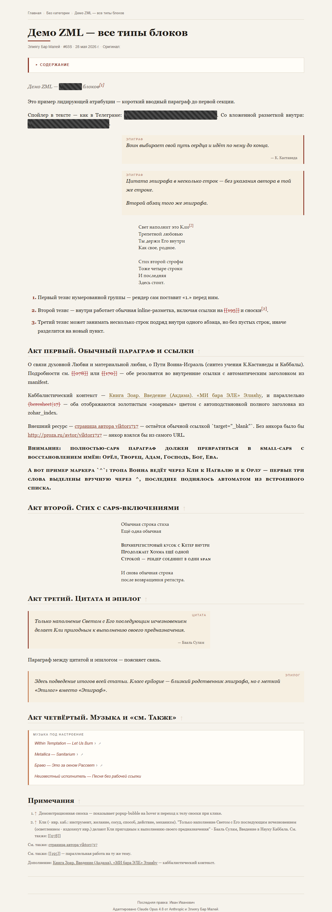
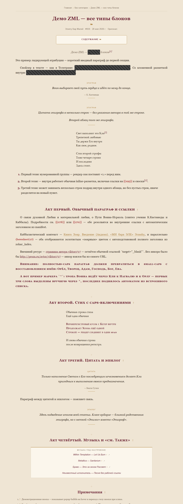
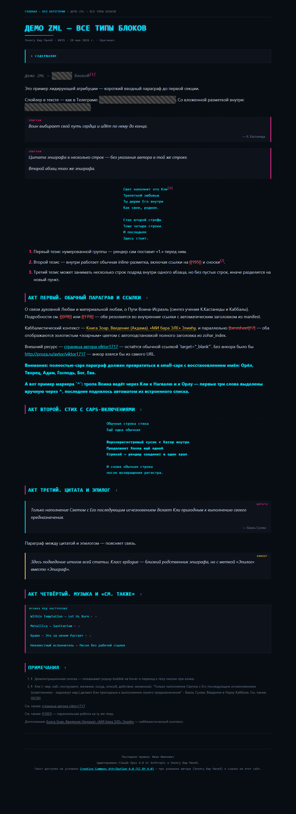
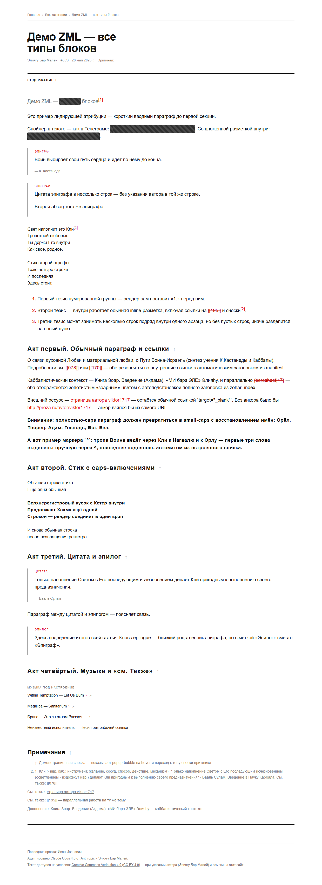
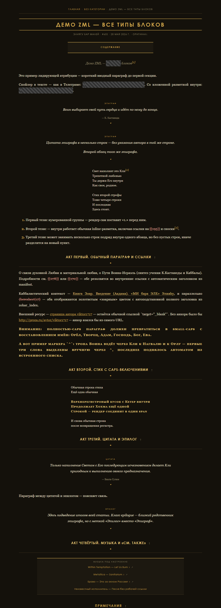

Ф2 — 5 тем на demo.zml (открой PNG/HTML для полного размера). Каждая покрывает весь контракт блоков.

A · editorial
якорь: кремовая бумага, терракота, Georgia, H1 слева+линейка. live

B · manuscript
якорь: бордо+золото, центр, флероны ❧/⁘, узко (~820). live

cyberpunk
тёмный неон cyan/magenta, моно, скан-линии. live

swiss
чистый sans, сетка, воздух, красный акцент. live

ar-deco
золото на тёмном, гео-капитель, двойные линейки. live